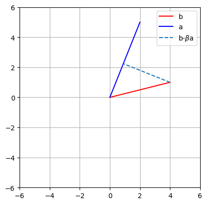

What is Projection?#
Author : Mustafa Sadeghi
Contact : mustafasadeghi@mail.um.ac.ir
Definition of Projection in \(\mathbb{R}^2\)#
The projection of a vector \( \vec{b} \) onto another vector \( \vec{a} \) is the component of \( \vec{b} \) that lies along the direction of \( \vec{a} \). This projection represents the closest vector along the line defined by \( \vec{a} \) to the vector \( \vec{b} \). The projection minimizes the difference between \( \vec{b} \) and its projection, making the residual orthogonal to \( \vec{a} \). The formula for the projection of \( \vec{b} \) onto \( \vec{a} \) is:

In this formula:
\( \vec{a}^T \vec{b} \) represents the dot product of \( \vec{b} \) and \( \vec{a} \), which measures how much \( \vec{b} \) aligns with \( \vec{a} \).
\( \vec{a}^T \vec{a} \) represents the magnitude (length) of vector \( \vec{a} \), ensuring that the projection accounts for the size of \( \vec{a} \).
The result is a scaled version of \( \vec{a} \) that points in the same direction as \( \vec{a} \), but has a magnitude such that the difference between \( \vec{b} \) and its projection is minimized.
In summary, projection is the transformation that gives the closest vector along the direction of \( \vec{a} \) to \( \vec{b} \), ensuring orthogonality between the residual and \( \vec{a} \).
import numpy as np
import matplotlib.pyplot as plt
import math
# line b
b = np.array([ 4,1 ])
# line a
a = np.array([ 2, 5 ])
# beta
beta = (a.T@b) / (a.T@a)
# draw!
plt.plot([0, b[0]],[0, b[1]],'r',label='b')
plt.plot([0, a[0]],[0, a[1]],'b',label='a')
# now plot projection line
plt.plot([b[0], beta*a[0]],[b[1], beta*a[1]],'--',label=r'b-$\beta$a')
plt.axis('square')
plt.grid()
plt.legend()
plt.axis((-6, 6, -6, 6))
plt.show()
Projection Derivation#
Start with the condition for projection:
This states that the vector \(\vec{b} - \vec{a}\beta\), which represents the error between \(\vec{b}\)and its projection onto \(\vec{a}\), must be orthogonal to \(\vec{a}\).
Expand and rearrange:
Solve for \(\beta\):
Thus, the scalar \(\beta\) is the factor by which \(\vec{a}\) is scaled to give the projection of \(\vec{b}\) onto \(\vec{a}\).
Finally, the projection of \(\vec{b}\) onto \(\vec{a}\) is given by:
notice : \(\beta \vec{a}\) is as close as possible to point b withuot living the line a.
Projection methods in \(\mathbb{R}^2\) (vector to vector)#
Projection of Vector \(\vec{b} = [4, 1]\) onto \(\vec{a} = [1, 4]\)#
Method 1: Projection onto a Line#
The projection of \(\vec{b}\) onto a line defined by \(\vec{a}\) is calculated as:
Steps:
Dot product of \(\vec{b} \cdot \vec{a}\):
\[ \vec{b} \cdot \vec{a} = (4)(1) + (1)(4) = 4 + 4 = 8 \]This step finds the magnitude of the projection of \(\vec{b}\) in the direction of \(\vec{a}\).
Dot product of \(\vec{a} \cdot \vec{a}\):
\[ \vec{a} \cdot \vec{a} = (1)(1) + (4)(4) = 1 + 16 = 17 \]This calculates the magnitude of vector \(\vec{a}\), which helps in scaling the projection correctly.
Scalar \(\beta\):
\[ \beta = \frac{8}{17} \]The ratio of the dot products gives the scalar that determines how much of \(\vec{a}\) is in the direction of \(\vec{b}\).
Final projection:
\[ \text{Proj}_a(\vec{b}) = \frac{8}{17} \times [1, 4] = \left[\frac{8}{17}, \frac{32}{17}\right] \approx [0.47, 1.88] \]The vector \(\vec{a}\) is scaled by \(\beta\) to get the projection.
Method 2: Projection Using a Unit Vector#
In this method, we first normalize \(\vec{a}\) to create a unit vector, then calculate the projection.
Steps:
Normalize \(\vec{a}\):
\[ \|\vec{a}\| = \sqrt{(1)^2 + (4)^2} = \sqrt{17}, \quad \hat{u} = \frac{1}{\sqrt{17}} [1, 4] \]This step ensures that the projection is independent of the magnitude of \(\vec{a}\), focusing only on the direction.
Dot product of \(\vec{b} \cdot \hat{u}\):
\[ \vec{b} \cdot \hat{u} = 4 \times \frac{1}{\sqrt{17}} + 1 \times \frac{4}{\sqrt{17}} = \frac{8}{\sqrt{17}} \]This calculates the component of \(\vec{b}\) in the direction of the unit vector \(\hat{u}\).
Final projection:
\[ \text{Proj}_a(\vec{b}) = \frac{8}{\sqrt{17}} \times \left[\frac{1}{\sqrt{17}}, \frac{4}{\sqrt{17}}\right] = \left[\frac{8}{17}, \frac{32}{17}\right] \approx [0.47, 1.88] \]The projection is obtained by scaling the unit vector \(\hat{u}\).
Method 3: Projection as a Linear Transformation#
Since projections are linear transformations, they can also be expressed as a matrix-vector multiplication.
Steps:
Unit vector \(\hat{u}\): From Method 2, the unit vector is:
\[ \hat{u} = \left[\frac{1}{\sqrt{17}}, \frac{4}{\sqrt{17}}\right] \]Construct the projection matrix \(A\):
\[\begin{split} A = \begin{bmatrix} u_1^2 & u_1 u_2 \\ u_1 u_2 & u_2^2 \end{bmatrix} = \begin{bmatrix} \frac{1}{17} & \frac{4}{17} \\ \frac{4}{17} & \frac{16}{17} \end{bmatrix} \end{split}\]This matrix represents the transformation that projects any vector onto the line defined by \(\hat{u}\).
Matrix multiplication:
\[\begin{split} A \vec{b} = \begin{bmatrix} \frac{1}{17} & \frac{4}{17} \\ \frac{4}{17} & \frac{16}{17} \end{bmatrix} \begin{bmatrix} 4 \\ 1 \end{bmatrix} = \begin{bmatrix} \frac{8}{17} \\ \frac{32}{17} \end{bmatrix} \approx [0.47, 1.88] \end{split}\]The projection is found by multiplying the matrix \(A\) by \(\vec{b}\).
Final Result#
For all three methods, the projection of \(\vec{b} = [4, 1]\) onto \(\vec{a} = [1, 4]\) is:
These methods illustrate different approaches to the same problem, each confirming the correctness of the projection result.
Projection methods in \(\mathbb{R}^2\) implementation in python#
import numpy as np
import matplotlib.pyplot as plt
# Method1
def projection_onto_line(b, a):
dot_product_b_a = np.dot(b, a)
dot_product_a_a = np.dot(a, a)
beta = dot_product_b_a / dot_product_a_a
proj = beta * a
return proj
# Merhod2
def projection_using_unit_vector(b, a):
norm_a = np.linalg.norm(a)
u_hat = a / norm_a
dot_product_b_u_hat = np.dot(b, u_hat)
proj = dot_product_b_u_hat * u_hat
return proj
# Method3
def projection_as_matrix_product(b, a):
norm_a = np.linalg.norm(a)
u_hat = a / norm_a
A = np.array([[u_hat[0]**2, u_hat[0]*u_hat[1]],
[u_hat[0]*u_hat[1], u_hat[1]**2]])
proj = A @ b
return proj
def plot_projection(b, a, proj, method_name, ax):
# Plot original vectors and projection
ax.quiver(0, 0, b[0], b[1], angles='xy', scale_units='xy', scale=1, color='blue', label='Vector b', linewidth=2)
ax.quiver(0, 0, a[0], a[1], angles='xy', scale_units='xy', scale=1, color='red', label='Vector a', linewidth=2)
ax.quiver(0, 0, proj[0], proj[1], angles='xy', scale_units='xy', scale=1, color='green', label=f'Projection ({method_name})', linewidth=2, alpha=0.7)
# Plot projection line
ax.plot([b[0], proj[0]], [b[1], proj[1]], color='orange', linestyle='--', linewidth=1.5, alpha=0.5, label='b to Projection')
# Set limits and grid
ax.set_xlim(-1, 5)
ax.set_ylim(-1, 5)
ax.grid()
ax.axhline(0, color='black', linewidth=0.5, ls='--')
ax.axvline(0, color='black', linewidth=0.5, ls='--')
ax.set_aspect('equal', adjustable='box')
ax.set_title(f'Projection of Vector b onto Vector a - {method_name}')
ax.legend()
# Define the vectors
b = np.array([4, 1]) # Vector b
a = np.array([1, 4]) # Vector a
# Calculate projections
proj_line = projection_onto_line(b, a)
proj_unit_vector = projection_using_unit_vector(b, a)
proj_matrix_product = projection_as_matrix_product(b, a)
# Create a figure with subplots in one row
fig, axs = plt.subplots(1, 3, figsize=(18, 6))
# Plotting the projections
plot_projection(b, a, proj_line, "Line Projection", axs[0])
plot_projection(b, a, proj_unit_vector, "Unit Vector Projection", axs[1])
plot_projection(b, a, proj_matrix_product, "Matrix-Vector Product Projection", axs[2])
plt.tight_layout()
plt.show()
print(f"Method 1: {proj_line.round(2)}")
print(f"Method 2: {proj_unit_vector.round(2)}")
print(f"Method 3: {proj_matrix_product.round(2)}")
Method 1: [0.47 1.88]
Method 2: [0.47 1.88]
Method 3: [0.47 1.88]
Projection methods in \(\mathbb{R}^3\) (Vector to Vector)#
Projection of Vector \(\vec{b} = [4, 1, 2]\) onto \(\vec{a} = [1, 4, 3]\)#
Method 1: Projection onto a Line#
The projection of \(\vec{b}\) onto \(\vec{a}\) is calculated as:
Steps:#
Dot product \(\vec{b} \cdot \vec{a}\):
Dot product $\(\vec{a} \cdot \vec{a}\)$:
Calculate scalar \(\beta\):
Final projection:
Method 2: Projection Using a Unit Vector#
Normalize \(\vec{a}\):
Dot product \(\vec{b} \cdot \hat{u}\):
Final projection:
Method 3: Projection as a Matrix-Vector Product#
Unit vector \(\hat{u}\) (as calculated earlier):
Construct the projection matrix ( A ):
Matrix multiplication:
Final Result#
For all three methods, the projection of \(\vec{b} = [4, 1, 2]\) onto \(\vec{a} = [1, 4, 3]\) is:
These methods confirm the correctness of the projection result in \(\mathbb{R}^3\).
Projection methods in \(\mathbb{R}^3\) implementation in python (Vector to Vector)#
import numpy as np
import matplotlib.pyplot as plt
from mpl_toolkits.mplot3d import Axes3D
# Define the vectors
b = np.array([4, 1, 2])
a = np.array([1, 4, 3])
# Method 1: Projection onto a Line
def projection_line(b, a):
return (np.dot(b, a) / np.dot(a, a)) * a
proj_line = projection_line(b, a)
# Method 2: Projection Using a Unit Vector
def projection_unit(b, a):
u = a / np.linalg.norm(a) # Normalize a
return np.dot(b, u) * u
proj_unit = projection_unit(b, a)
# Method 3: Projection as a Matrix-Vector Product
def projection_matrix(b, a):
u = a / np.linalg.norm(a) # Normalize a
projection_matrix = np.outer(u, u) # Outer product to form the matrix
return projection_matrix @ b # Matrix-vector multiplication
proj_matrix = projection_matrix(b, a)
# Prepare the figure
fig = plt.figure(figsize=(15, 5))
# Plot Method 1: Direct Projection
ax1 = fig.add_subplot(131, projection='3d')
ax1.quiver(0, 0, 0, b[0], b[1], b[2], color='r', label='Vector b', arrow_length_ratio=0.1)
ax1.quiver(0, 0, 0, a[0], a[1], a[2], color='g', label='Vector a', arrow_length_ratio=0.1)
ax1.quiver(0, 0, 0, proj_line[0], proj_line[1], proj_line[2], color='b', label='Projection', arrow_length_ratio=0.1)
# Dashed line from b to the projection point
ax1.plot([b[0], proj_line[0]], [b[1], proj_line[1]], [b[2], proj_line[2]], 'k--', label='Line to Projection')
ax1.set_xlim([-1, 5])
ax1.set_ylim([-1, 5])
ax1.set_zlim([-1, 5])
ax1.set_title('Projection onto a Line')
ax1.set_xlabel('X axis')
ax1.set_ylabel('Y axis')
ax1.set_zlabel('Z axis')
ax1.legend()
# Plot Method 2: Using a Unit Vector
ax2 = fig.add_subplot(132, projection='3d')
ax2.quiver(0, 0, 0, b[0], b[1], b[2], color='r', label='Vector b', arrow_length_ratio=0.1)
ax2.quiver(0, 0, 0, a[0], a[1], a[2], color='g', label='Vector a', arrow_length_ratio=0.1)
ax2.quiver(0, 0, 0, proj_unit[0], proj_unit[1], proj_unit[2], color='b', label='Projection', arrow_length_ratio=0.1)
# Dashed line from b to the projection point
ax2.plot([b[0], proj_unit[0]], [b[1], proj_unit[1]], [b[2], proj_unit[2]], 'k--', label='Line to Projection')
ax2.set_xlim([-1, 5])
ax2.set_ylim([-1, 5])
ax2.set_zlim([-1, 5])
ax2.set_title('Projection using a Unit Vector')
ax2.set_xlabel('X axis')
ax2.set_ylabel('Y axis')
ax2.set_zlabel('Z axis')
ax2.legend()
# Plot Method 3: Matrix-Vector Product
ax3 = fig.add_subplot(133, projection='3d')
ax3.quiver(0, 0, 0, b[0], b[1], b[2], color='r', label='Vector b', arrow_length_ratio=0.1)
ax3.quiver(0, 0, 0, a[0], a[1], a[2], color='g', label='Vector a', arrow_length_ratio=0.1)
ax3.quiver(0, 0, 0, proj_matrix[0], proj_matrix[1], proj_matrix[2], color='b', label='Projection', arrow_length_ratio=0.1)
# Dashed line from b to the projection point
ax3.plot([b[0], proj_matrix[0]], [b[1], proj_matrix[1]], [b[2], proj_matrix[2]], 'k--', label='Line to Projection')
ax3.set_xlim([-1, 5])
ax3.set_ylim([-1, 5])
ax3.set_zlim([-1, 5])
ax3.set_title('Projection using Matrix-Vector Product')
ax3.set_xlabel('X axis')
ax3.set_ylabel('Y axis')
ax3.set_zlabel('Z axis')
ax3.legend()
# Show the plots
plt.tight_layout()
plt.show()
Definition of Projection in \(\mathbb{R}^n\)#
The projection of a vector \( \vec{b} \in \mathbb{R}^n \) onto the column space of a matrix \( A \in \mathbb{R}^{n \times m} \) is the vector in the column space of \( A \) that is closest to \( \vec{b} \) in terms of Euclidean distance. This projection minimizes the difference between \( \vec{b} \) and the vector \( A \vec{x} \), where \( \vec{x} \in \mathbb{R}^m \) is the solution to the least squares problem.
Mathematical Expression:#
The projection of \( \vec{b} \) onto the column space of \( A \) is given by:
where:
\( A^T A \) is the Gram matrix, representing the inner products of the columns of \( A \),
\( (A^T A)^{-1} \) is the inverse of the Gram matrix (if it exists),
\( A^T \vec{b} \) is the projection of \( \vec{b} \) onto the rows of \( A \).
Geometric Interpretation:#
The resulting vector \( \text{Proj}_A(\vec{b}) \) lies in the column space of \( A \), meaning it can be expressed as a linear combination of the columns of \( A \). This projection ensures that the residual vector \( \vec{b} - \text{Proj}_A(\vec{b}) \) is orthogonal to the column space of \( A \).
Key Characteristics:#
The projection minimizes the distance between \( \vec{b} \) and the column space of \( A \).
The residual \( \vec{b} - A \vec{x} \) is orthogonal to the column space of \( A \).
This method is used in solving least squares problems, where the system \( A \vec{x} = \vec{b} \) may have no exact solution due to being overdetermined (more equations than unknowns).
Applications:#
Least squares regression, fitting a model to data points.
Dimensionality reduction, projecting high-dimensional data into a lower-dimensional subspace.